trigonometry
• Trigonometry is also referred to as 'trig' for short.
right angle triangles
main equations
All other equations in trigonometry are just these equations rearranged.
You can also use "SOH CAH TOA" to remember these:
S = sin
O = opposite
H = hypotenuse
C = cos
A = adjacent
H = hypotenuse
T = tan
O = opposite
A = adjacent
Hypotenuse, Adjacent and Opposite
These are the rules to find each value in a right-angle triangle.
The (θ) theta angle determines what is opposite and adjacent.
• The (H) Hypotenuse is always opposite the 90° angle.
• The (A) Adjacent is the angle between (θ) and the right angle.
• The (O) Opposite is opposite to the (θ) angle.
Example 1:

Example 2:
Missing Bottom Fraction

[Use Calculator]
Missing Top Fraction
[Use Calculator]
Missing [θ] Theta
[Use Calculator]